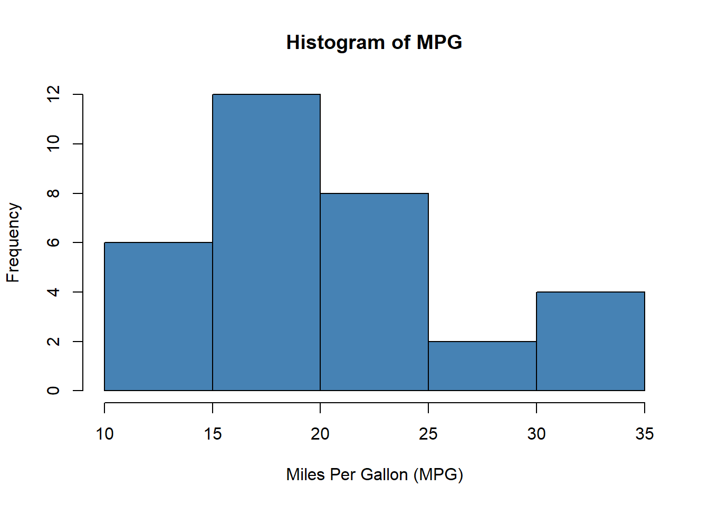
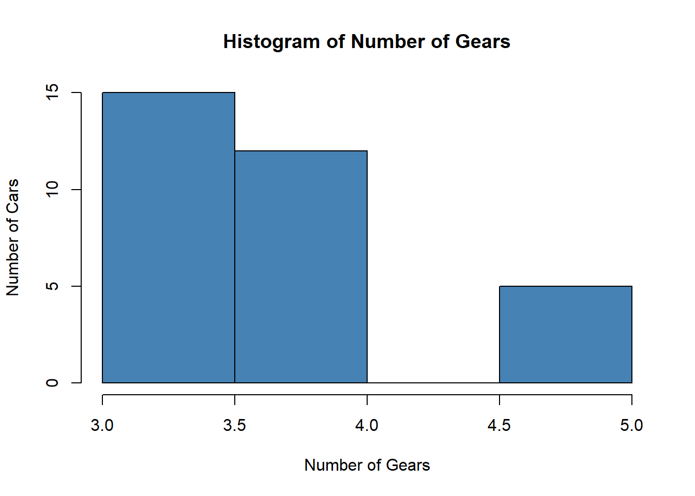
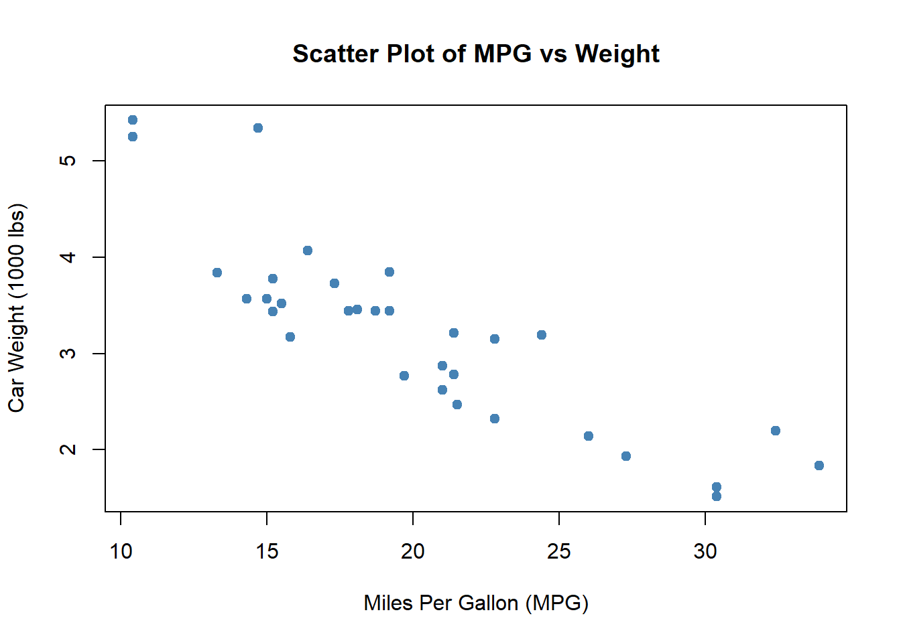
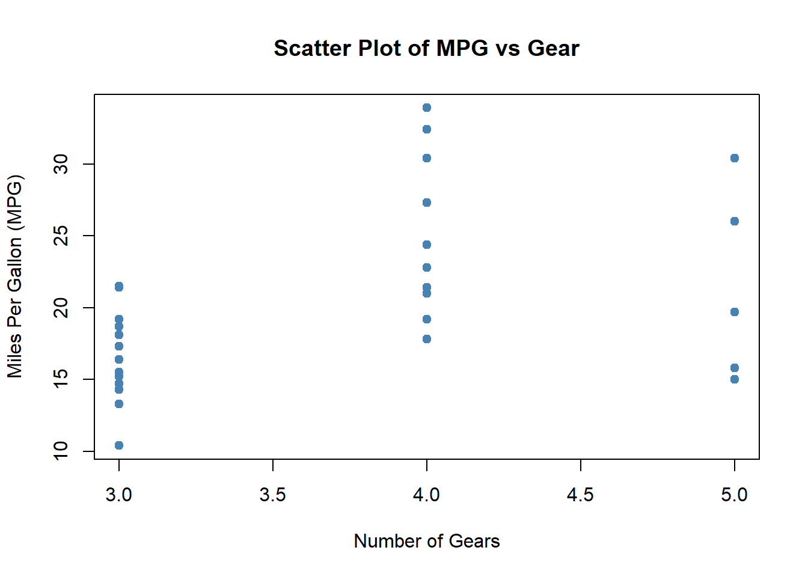

View(mtcars)Data Science Basics with R: Exploratory Data Analysis
1 Introduction
This lab introduces Exploratory Data Analysis (EDA) using the built-in mtcars dataset in R.
1.1 Learning Objectives
- Understand the structure of a dataset
- Perform basic exploratory analysis
- Visualize data using histograms and scatter plots
- Apply filtering, subsetting, and aggregation
2 Viewing the Dataset
3 Checking Dataset Dimensions
dim(mtcars)[1] 32 114 Previewing Data Values
head(mtcars) mpg cyl disp hp drat wt qsec vs am gear carb
Mazda RX4 21.0 6 160 110 3.90 2.620 16.46 0 1 4 4
Mazda RX4 Wag 21.0 6 160 110 3.90 2.875 17.02 0 1 4 4
Datsun 710 22.8 4 108 93 3.85 2.320 18.61 1 1 4 1
Hornet 4 Drive 21.4 6 258 110 3.08 3.215 19.44 1 0 3 1
Hornet Sportabout 18.7 8 360 175 3.15 3.440 17.02 0 0 3 2
Valiant 18.1 6 225 105 2.76 3.460 20.22 1 0 3 1head(mtcars, n = 3) mpg cyl disp hp drat wt qsec vs am gear carb
Mazda RX4 21.0 6 160 110 3.90 2.620 16.46 0 1 4 4
Mazda RX4 Wag 21.0 6 160 110 3.90 2.875 17.02 0 1 4 4
Datsun 710 22.8 4 108 93 3.85 2.320 18.61 1 1 4 1tail(mtcars) mpg cyl disp hp drat wt qsec vs am gear carb
Porsche 914-2 26.0 4 120.3 91 4.43 2.140 16.7 0 1 5 2
Lotus Europa 30.4 4 95.1 113 3.77 1.513 16.9 1 1 5 2
Ford Pantera L 15.8 8 351.0 264 4.22 3.170 14.5 0 1 5 4
Ferrari Dino 19.7 6 145.0 175 3.62 2.770 15.5 0 1 5 6
Maserati Bora 15.0 8 301.0 335 3.54 3.570 14.6 0 1 5 8
Volvo 142E 21.4 4 121.0 109 4.11 2.780 18.6 1 1 4 25 Dataset Documentation
?mtcars6 Inspecting Dataset Structure
str(mtcars)'data.frame': 32 obs. of 11 variables:
$ mpg : num 21 21 22.8 21.4 18.7 18.1 14.3 24.4 22.8 19.2 ...
$ cyl : num 6 6 4 6 8 6 8 4 4 6 ...
$ disp: num 160 160 108 258 360 ...
$ hp : num 110 110 93 110 175 105 245 62 95 123 ...
$ drat: num 3.9 3.9 3.85 3.08 3.15 2.76 3.21 3.69 3.92 3.92 ...
$ wt : num 2.62 2.88 2.32 3.21 3.44 ...
$ qsec: num 16.5 17 18.6 19.4 17 ...
$ vs : num 0 0 1 1 0 1 0 1 1 1 ...
$ am : num 1 1 1 0 0 0 0 0 0 0 ...
$ gear: num 4 4 4 3 3 3 3 4 4 4 ...
$ carb: num 4 4 1 1 2 1 4 2 2 4 ...7 Summary Statistics
summary(mtcars) mpg cyl disp hp
Min. :10.40 Min. :4.000 Min. : 71.1 Min. : 52.0
1st Qu.:15.43 1st Qu.:4.000 1st Qu.:120.8 1st Qu.: 96.5
Median :19.20 Median :6.000 Median :196.3 Median :123.0
Mean :20.09 Mean :6.188 Mean :230.7 Mean :146.7
3rd Qu.:22.80 3rd Qu.:8.000 3rd Qu.:326.0 3rd Qu.:180.0
Max. :33.90 Max. :8.000 Max. :472.0 Max. :335.0
drat wt qsec vs
Min. :2.760 Min. :1.513 Min. :14.50 Min. :0.0000
1st Qu.:3.080 1st Qu.:2.581 1st Qu.:16.89 1st Qu.:0.0000
Median :3.695 Median :3.325 Median :17.71 Median :0.0000
Mean :3.597 Mean :3.217 Mean :17.85 Mean :0.4375
3rd Qu.:3.920 3rd Qu.:3.610 3rd Qu.:18.90 3rd Qu.:1.0000
Max. :4.930 Max. :5.424 Max. :22.90 Max. :1.0000
am gear carb
Min. :0.0000 Min. :3.000 Min. :1.000
1st Qu.:0.0000 1st Qu.:3.000 1st Qu.:2.000
Median :0.0000 Median :4.000 Median :2.000
Mean :0.4062 Mean :3.688 Mean :2.812
3rd Qu.:1.0000 3rd Qu.:4.000 3rd Qu.:4.000
Max. :1.0000 Max. :5.000 Max. :8.000 8 Histogram: Distribution of MPG
hist(mtcars$mpg,
col = "steelblue",
main = "Histogram of MPG",
xlab = "Miles Per Gallon (MPG)",
ylab = "Frequency")
9 Histogram: Number of Gears
hist(mtcars$gear,
col = "steelblue",
main = "Histogram of Number of Gears",
xlab = "Number of Gears",
ylab = "Number of Cars")
10 Scatter Plot: MPG vs Weight
plot(mtcars$mpg, mtcars$wt,
col = "steelblue",
main = "Scatter Plot of MPG vs Weight",
xlab = "Miles Per Gallon (MPG)",
ylab = "Car Weight (1000 lbs)",
pch = 19)
11 Scatter Plot: MPG vs Gear
plot(mtcars$gear, mtcars$mpg,
col = "steelblue",
main = "Scatter Plot of MPG vs Gear",
xlab = "Number of Gears",
ylab = "Miles Per Gallon (MPG)",
pch = 19)
12 Subsetting Data
mt1 <- mtcars[mtcars$mpg > 20, c("gear", "mpg")]
View(mt1)13 Aggregation: Mean MPG by Gear
mt2 <- aggregate(. ~ gear,
mtcars[mtcars$mpg > 20, c("gear", "mpg")],
mean)
View(mt2)14 Post-Aggregation Filtering
mt3 <- subset(mt2, mpg > 25)
View(mt3)15 Key Takeaways
Exploratory Data Analysis is the foundation of all data science and machine learning workflows.